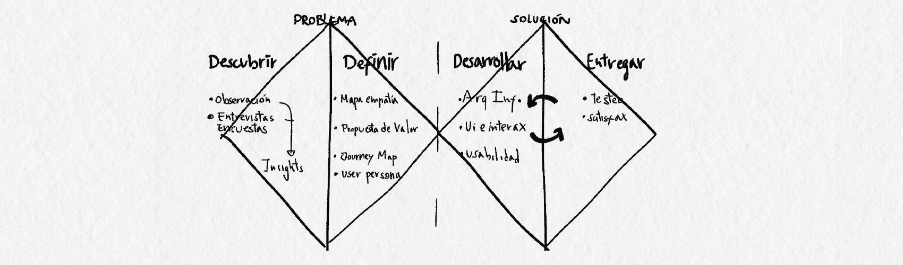

ViMu surge como respuesta a la brecha entre museos y posibles visitantes. Identificando la falta de información oportuna, confusión y dispersión de esta.
La meta de este proyecto era crear una plataforma en la que se unieran todos los museos e información sobre eventos en un solo medio y que esta fuese claro y de fácil acceso para los usuarios
ViMu está basado en el modelo del doble diamante y lean UX, pasando por múltiples fases de divergencia y convergencia.
Esta etapa consiste en divergir e intentar obtener la mayor cantidad de información posible.
La primera etapa está compuesta por investigación de escritorio como una forma rápida de a. encontrar problemas o b. confirmar problemas. En este caso, debido al contexto de post-pandemia sabíamos que existía una problemática
relacionada a las visitas que reciben los museos en comparación a años anteriores (disminución de un ≈90%)
La Segunda etapa está compuesta por entrevistas a usuarios y stakeholders.
En esta etapa se intentan identificar posibles dolores de los usuarios, se utilizó la entrevista de manera que los usuarios y stakeholders nos hablaran sobre sus experiencias y expectativas.
La entrevista se dividió en cuatro secciones: contexto, relación con la cultura, relación con los museos y mirada a futuro.
La sección contexto servía como un primer contacto con el usuario y una forma de hacerlo sentir cómodo/prepararlo para las siguientes secciones.
La sección relación con la cultura nos deja entender como los hábitos de los entrevistados se vieron alterados durante la pandemia y post-pandemia, principalmente en cuanto a frecuencia y consumo.
La sección relación con los museos nos reveló motivaciones y que es lo que más valoraban los visitantes al asistir a museos.
La sección mirada a futuro nos reveló la postura de los entrevistados frente a la digitalización y cómo ellos piensan que debe ser incluida en los museos.

Los insights se obtuvieron a través de la saturación de información proveniente de la investigación de escritorio
entrevistas y encuestas.
Para esto se analizó la información rescatando ideas principales, palabras claves,
temáticas que se repitieran por párrafo y luego estas se agruparon buscando conexiones entre ellas.
Se encontraron citas, nuevas problemáticas, nuevas formas de relacionarse con la cultura y cómo esta afecta a los usuarios, que valoran los usuarios,
que parte de la experiencia les parece imprescindible, cual es la motivación principal de los usuarios para asistir a los museos, que hace la diferencia entre
interesarse y asistir.
MOTIVACIONES
“...Iba a algún lado, museo, tocata, algún panorama para juntarme con alguien era un museo lo que fuera, algún evento cultural... “
“Me gusta visitar museos porque siento que estoy aprendiendo cosas nuevas todo el tiempo. Siempre hay algo que no sé, que aprendo en un museo”
“...realizando mi titulo asi que leia mucho articulo, paper, documento relacionado y para ventilarme veia sesiones online de bandas que me gustaban, tambien dibujaba...”
DOLORES
"Yo creo que se ha disminuido por el mismo hecho de que de repente no, no tengo idea qué cosas culturales hay”.
“La gente suele ir a los museos y después no regresan porque ya han visto las obras y lo que hay dentro de los museos. No vuelven porque ya saben lo que van a ver”.
INTERACCIÓN
“Es casi imposible no agregar cosas digitales, agregar botones, micrófonos, pantalla y de a poco ir cambiando a lo digital. Yo creo que hay cosas que nunca deberían ser digitales, pero hacer una mezcla de ambas me parece bastante provechoso”.
La cantidad de visitas/engagement en posts no se traducía en visitas reales por lo que la información no estaba llegando a suficientes personas o la información no era suficientemente motivadora como para visitar el museo.
La user persona se basó en la motivación principal de los entrevistados para asistir a los museos: "la curiosidad" y búsqueda de nuevos conocimientos
Rescatando expectativas, motivaciones y dolores secundarios asociados a este tipo de usuarios.
Debido a que la mayoría de los usuarios se entera de los eventos disponibles en museos a través de RRSS, el user journey comienza con ese descubrimiento.
El user journey consta en el descubrimiento de un evento que ya sucedió y la búsqueda de un evento alterno que satisfaga la curiosidad despertada por el primero, búsqueda de un horario compatible, agendamiento, compra de entradas, llegada al evento y post-evento.
El proceso constó en una lluvia de ideas respecto a esta nueva aplicación, búsqueda de referentes y arquitectura de la aplicación combinándola con los flujos de usuario y card sorting; sketch de wireframes, prototipos de baja y alta fidelidad.
Esta etapa se centró en jerarquizar la información y darle un foco principal a la aplicación: el descubrimiento de nuevos eventos
por lo que el home se centró en presentar eventos similares a eventos anteriores a los que el usuario haya concurrido dejando en un segundo plano la búsqueda.
Debido a que no siempre se planea con tiempo a dónde ir, no sabremos si tendremos ganas mañana, se agregó una sección de eventos cercanos en caso de no tener un panorama planeado.
Como secciones extra se agregaron eventos/talleres/workshops gratuitos.
Se utilizó una tipografía regular con monoespaciado bajo un concepto de unidad, cultura, formalidad.
Se utilizó una paleta asociada a estos conceptos, agregando el conocimiento y el descubrimiento. Esta paleta se utilizó aplicando el 30-60-90.